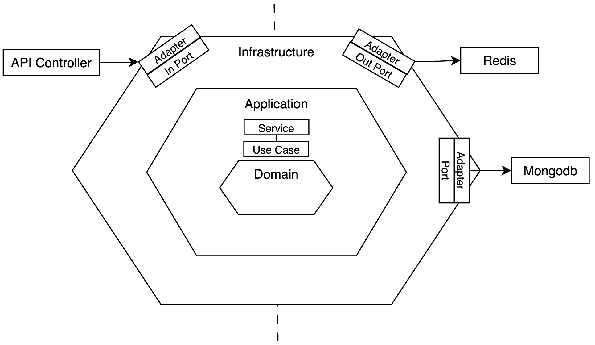
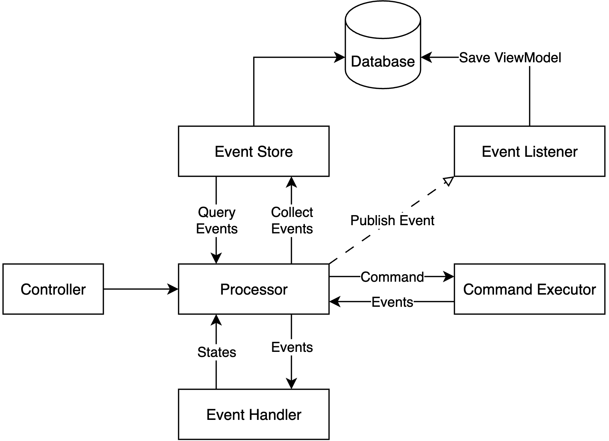

MedOps는 사용자에게는 온라인 예약 경험과 병원 관리자에게는 효율적인 운영 관리 도구를 제공하는 예약 관리 시스템입니다.
이 프로젝트는 Spring Boot와 React를 기반으로, 현대적인 웹 애플리케이션의 필수 기능인 사용자 인증, 실시간 데이터 처리, 관리자 대시보드 등을 구현하는 데 목표를 두었습니다.
환자용 예약 플로우와 관리자용 백오피스 시스템을 모두 구축하여, 실제 서비스 수준의 복잡성을 가진 애플리케이션을 설계하고 개발하는 종합적인 역량을 보여주고자 했습니다.
백엔드는 java, spring boot 를 사용하여 작성하였으며 프론트 엔드는 react, vite, tailwindcss 를 사용하여 작성하였습니다.
🏗 시스템 아키텍처
헥사고날 아키텍처 구조

🎯 헥사고날 아키텍처 선택 이유
레이어드 아키텍쳐의 의존성 참조 순서는 다음과 같습니다.
Controller → Service → Repository → Database
레이어드 아키텍쳐는 서비스 계층이 JPA에 종속되어 프레임워크 로직과 비즈니스 로직이 혼재되기 쉽습니다
반면 헥사고날 아키텍쳐는 인터페이스를 통한 의존성 주입으로 순수한 도메인 로직을 관리할 수 있습니다.
레이어드 아키텍쳐는 Persistence 계층 변경 시 Service 계층도 수정 필요합니다
헥사고날 아키텍쳐는 어댑터만 교체하면 인터페이스는 그대로라 Service 로직 변경 없이 변경이 가능합니다
현재 프로젝트 구조가 단순하여 레이어드 아키텍쳐도 괜찮은 선택이지만
이후 mongodb 대신 rds를 사용할때 변경작업이 수월할것으로 예상하였습니다.
따라서 테스트 코드 작성시 SpringBootTest 사용을 최소화 할 수 있어 관리가 수월하다 판단하였습니다.
이벤트 소싱 플로우
📖 이벤트 소싱 + CQRS
이벤트 소싱은 애플리케이션의 상태 변경을 이벤트의 시퀀스로 저장하는 아키텍처 패턴입니다.
현재 상태를 직접 저장하는 대신, 상태를 변경하는 모든 이벤트를 순서대로 저장하고, 필요시 이벤트들을 재생(replay)하여 현재 상태를 복원합니다.
스트림 저장은 CQRS에서 command 처리와 자연스럽게 통합됩니다.
이벤트 발생마다 이벤트 구독 프로세스가 읽기 전용 모델 역정규화 형태로 갱신하여 Query 영역을 최적화 합니다.
시간여행이 가능한 시스템 아키텍처 를 참고하여 프로젝트에 반영하였습니다.
🎯 이벤트 소싱 선택 이유
모든 변경 사항이 이벤트로 기록되어 "언제, 무엇이, 왜" 변경되었는지 파악 가능합니다.
따라서 과거 특정 시점의 시스템 상태를 정확히 복원가능하며 디버깅과 분석에 활용할 수 있습니다.
이런 장점으로 장애 상황에서 이벤트 재생을 통한 안전한 시스템 복구가 가능합니다.
현재 프로젝트는 단순하여 전통적인 로그방식도 괜찮은 선택입니다
그러나 특정 속성 변경에 대한 로그만으로는 컨텍스트 파악 어렵고 특정 시점 복구도 매우 어렵다는 단점이 있습니다
따라서 확정성을 생각하고 예약에 대한 히스토리를 사용자에게 빠르게 전달하는데 이벤트 소싱 방식이 적합하다 판단하였습니다.

위 이벤트 소싱 도식화에 기반한 상황별 이벤트 처리 흐름 예시입니다.
1. 예약 신청 이벤트 발생 ->
processor.handled에서 commandExecutor를 통해 events 생성 ->
processor.handled에서 event store를 통해 events 저장 ->
processor.handled에서 event publisher 호출 ->
event listener 에서 subscribe 로직에 따라 event 내용을 기반으로 view model 최신화
2. 예약 접수 이벤트 발생 ->
processor.handled에서 event store를 통해 지난 events 조회 ->
processor.handled에서 event handler를 통해 state 구성 ->
processor.handled에서 commandExecutor를 통해 events 생성 ->
processor.handled에서 event store를 통해 events 저장 ->
processor.handled에서 event publisher 호출 ->
event listener 에서 subscribe 로직에 따라 event 내용을 기반으로 view model 최신화
⚡ 핵심 기능 및 구현 내용
📅 예약 관리 시스템
스크린샷: 예약 생성/수정 화면
• 예약 → 확정 → 완료까지 상태 관리
• 의사배정, 다음 예약 생성, 지난 예약 히스토리 조회
• 이벤트 소싱으로 모든 변경 이력 추적
🔔 실시간 알림 (SSE)
스크린샷: 실시간 알림 화면
• Server-Sent Events 기반 실시간 알림
• 예약 상태 변경 즉시, 여러명의 병원 관리자에게 데이터 전달하여 화면 갱신
• 병원별 격리된 알림 관리
📊 관리자 대시보드
스크린샷: 대시보드 화면
• 실시간 예약 현황 모니터링
• 매출 통계 및 성과 분석
• 차트 기반 데이터 시각화
🔧 기술적 도전과 해결
⚠️ 도전 과제 1: 이벤트 재생 성능 문제
📋 문제 상황
• 1000개 이상 이벤트 재생 시 3초 이상 소요
• 사용자 경험 저하 및 시스템 부하
• 실시간 상태 조회 성능 저하
🔧 해결 방법
• 스냅샷 패턴 도입
• 100개 이벤트마다 상태 저장
• 이벤트 재생 범위 최소화
• 메모리 기반 캐싱 추가
📈 결과
• 3초 → 0.3초로 90% 성능 향상
• 사용자 체감 속도 대폭 개선
• 메모리 사용량 최적화
• 실시간 조회 가능
⚠️ 도전 과제 2: SSE 연결 관리 및 메모리 누수
📋 문제 상황
• 클라이언트 비정상 종료 시 SseEmitter 누적
• 메모리 누수로 서버 안정성 저하
• 연결 상태 추적 어려움
🔧 해결 방법
• 타임아웃 설정 (30분)
• 주기적 연결 상태 체크
• onCompletion/onError 핸들러 추가
• 병원별 연결 맵 관리
📈 결과
• 메모리 누수 완전 해결
• 안정적인 실시간 알림 서비스
• 연결 상태 완전 추적
• 서버 안정성 확보